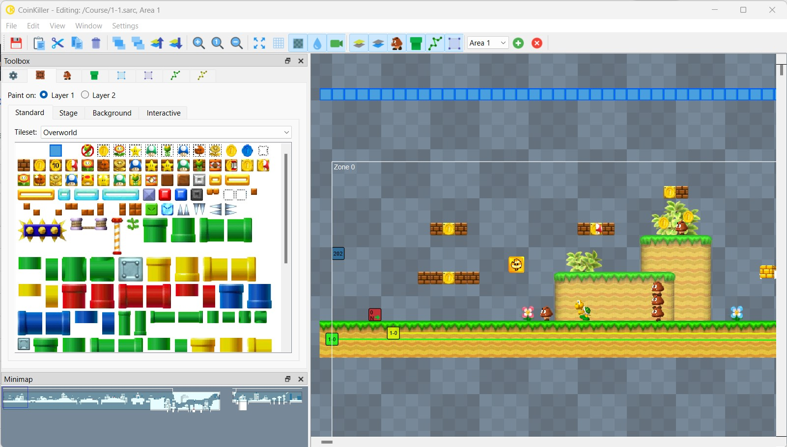
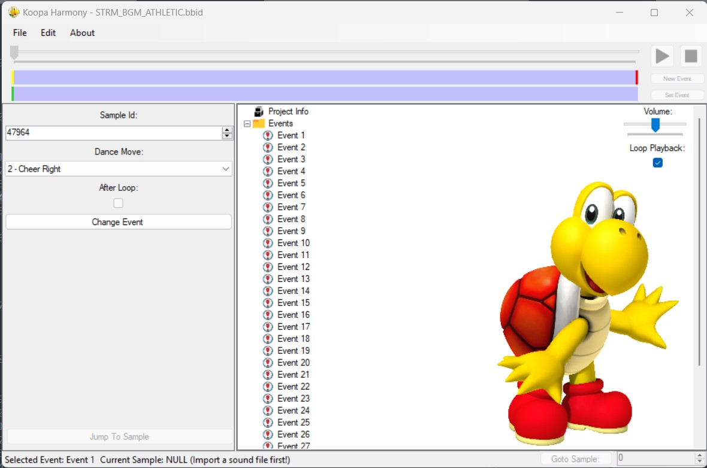
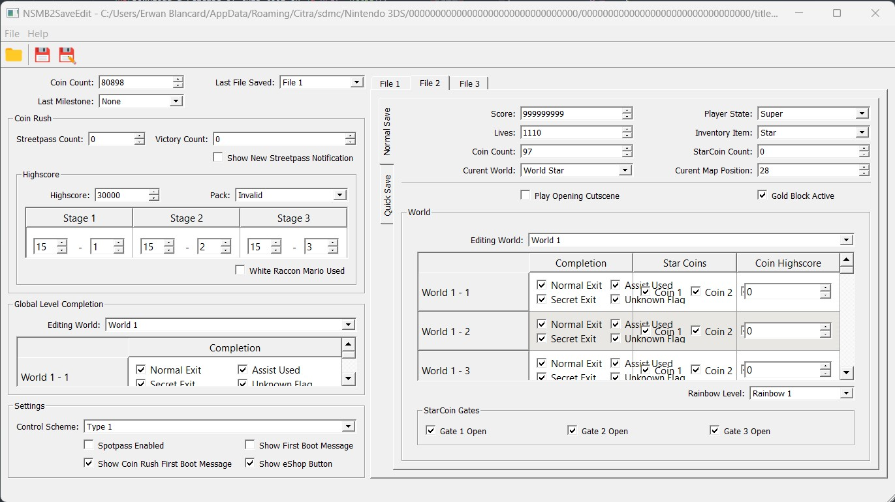
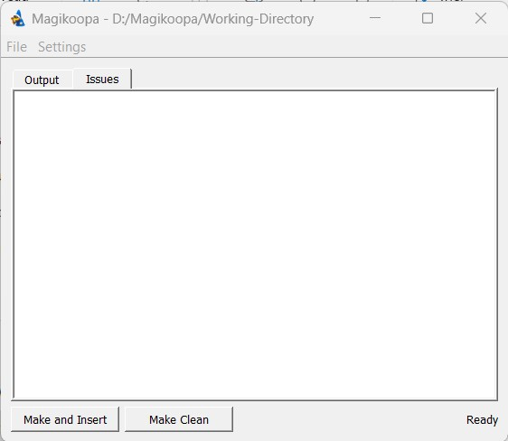

Find community made tools below !
Here's a list of NSMB2 specific tools to get started with NSMB2 hacking :
Coinkiller
What a 2D Mario game would be without levels ? Well, not much...
Made by Arisotura, RicBent and Explos, this tool is a level editor and tileset editor made for this game.

Download a release of this tool on GitHub.
RouteEdit
Made by Explos, this tool is a world path editor to edit things like unlocked paths after finishing a level, or the sound that plays when walking on the Map.
Be aware that this tools cannot create new paths, it can only specify attributes to paths as they are hardcoded in the world model file.
Download a release of this tool on GitHub.
Koopa Harmony
A tool made by Libertyermie, Wexos, Steveice10, TiniVi, Hiccup, Xcution, Abood, Gota7, to edit the behavior of koopas and other sprites when a “baph“ occurs.

BigRedEditor
A tool made by Explos to edit the game's save file.
You can pretty much edit everything the game saves with this tool, including per save file unlocked levels, secret entrances unlock, per level coin high score and the global coin count.

Download a release of this tool on GitHub.
Magikoopa
Probably one of the most interesting and powerful tools, made by RicBent, it litteraly allows to perform code injection into the game !
It is technically possible to do everything with this tool ! Althought it requires a strong knowledge in reverse engineering and assembly...
Luckily, RicBent has posted some examples for this tool !
You can find them on this GitHub page.

Download a release of this tool on GitHub.
NSMB2 Overlay Editor
A very, very simple tool (made by me!) to edit overlays on tilesets. Written in Java, requires at least Java 1.8 to run.
This tool was made to assist me for the tileset editing process.
Keep in mind that this tool only generates a .bin overlay file, it doesn't allow direct .sarc editing !
You have to import the overlay manually with the SARC Explorer in Coinkiller.
Download a release of this tool on GitHub.
3DS specific tools
A list of tools for general 3DS hacking :
EveryFileExplorer
An AIO file explorer that can open a large amount of 3DS, DS, GameCube, Switch, Wii and Wii U files
Download a release of this tool on GitHub.
Toolbox
Similar to EveryFileExplorer, Toolbox is a tool to edit many formats of Nintendo Switch, 3DS and Wii U.
Download a release of this tool on GitHub.
ctpktool
A handy tool to convert .ctpk texture files to .png images and vice-versa.
It would be mainly used to edit sprite animations in Tileset files in NSMB2.
Download a release of this tool on GitHub.
Kuriimu / Kuriimu2
Two general purpose game translation toolkit. They can be used to edit graphics in various model files, and much more.
Download a release of Kuriimu here, and of Kuriimu2 here on GitHub.
Citric Composer / Retsuko Sound Tool
Two useful tools that can edit Wii U and 3ds sound formats.
Ohana3DS Rebirth
A tool that can view and extract textures associated to model files.
Download a release of Ohana3DS Rebirth on GitHub.
BRSTM-BCSTM-BFSTM Conversion Tool
A converter that can create .brstm, .bcstm, .bfstm sound files out of common audio file formats.
You can find this tool on GBATemp.
A Tool is missing ?
Is a tool missing from our list ?
Did you make your own tool and want to list it here ?